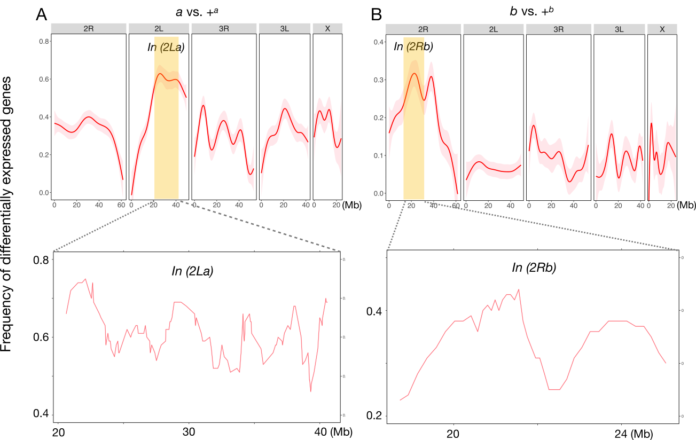
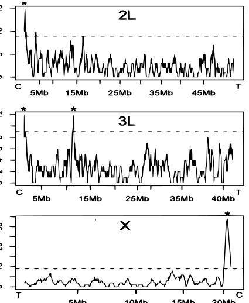

2024
[28] Yamada K\(^{\dagger}\), Menon JA, Kim Y, Cheng C, Chen W, Shih JA, Villasenor-Altamirano AB, Chen X, Immunology of Cardiac Arrest Network (I-CAN), Tamura T, Merriam LT, Kim EY\(^{\dagger}\), Weissman AJ\(^{\dagger}\).
Protocol for immunophenotyping out-of-hospital cardiac arrest patients.
STAR Protocols 5 (1), 102874.
2023
[27] Murphy AJ\(^{\ast \dagger}\), Cheng C\(^{\ast}\), Williams J, Shaw TI, Pinto EM, Dieseldorff-Jones K, Brzezinski J, Renfro LA, Tornwall B, Huff V, Hong AL, Mullen EA, Crompton B, Dome JS, Fernandez CV, Geller JI, Ehrlich PF, Mulder H, Oak N, Maciezsek J, Jablonowski C, Fleming AM, Pichavaram P, Morton CL, Easton J, Nichols KE, Clay MR, Santiago T, Zhang J, Yang J, Zambetti GP, Wang Z, Davidoff AM, Chen X \(^{\dagger}\).
Genetic and epigenetic features of bilateral Wilms tumor predisposition in patients from the Children’s Oncology Group AREN18B5-Q.
Nat Commun. 14, 8006 (2023).

[26] Cheng C\(^{\ast}\), Chen W\(^{\ast}\), Jin H\(^{\ast}\), Chen X.
A Review of Single-Cell RNA-Seq Annotation, Integration, and Cell-Cell Communication.
Cells. 2023 Jul 30;12(15). Review.

[25] Tamura T\(^{\ast}\), Cheng C\(^{\ast}\), Chen W, Merriam LT, Athar H, Kim YH, Manandhar R, Amir Sheikh MD, Pinilla-Vera M, Varon J, Hou PC, Lawler PR, Oldham WM, Seethala RR, Tesfaigzi Y, Weissman AJ, Baron RM, Ichinose F, Berg KM, Bohula EA, Morrow DA, Chen X, Kim EY.
Single-cell transcriptomics reveal a hyperacute cytokine and immune checkpoint axis after cardiac arrest in patients with poor neurological outcome.
Med. 2023 Jul 14;4(7):432-456.e6.
[24] Fang J\(^{\ast}\), Singh S\(^{\ast}\), Cheng C\(^{\ast}\), Natarajan S\(^{\ast}\), Sheppard H\(^{\ast}\), Abu-Zaid A, Durbin AD, Lee HW, Wu Q, Steele J, Connelly JP, Jin H, Chen W, Fan Y, Pruett-Miller SM, Rehg JE, Koo SC, Santiago T, Emmons J, Cairo S, Wang R, Glazer ES, Murphy AJ, Chen T, Davidoff AM, Armengol C, Easton J, Chen X, Yang J.
Genome-wide mapping of cancer dependency genes and genetic modifiers of chemotherapy in high-risk hepatoblastoma.
Nat Commun. 2023 Jul 6;14(1):4003.
2022

[23] Kovach AR, Oristian KM, Kirsch DG, Bentley RC, Cheng C, Chen X, Chen PH, Chi JA, Linardic CM.
Identification and targeting of a HES1-YAP1-CDKN1C functional interaction in fusion-negative rhabdomyosarcoma.
Mol Oncol. 2022 Oct;16(20):3587-3605.
2021

[22] Cheng C, Kirkpatrick M.
Molecular evolution and the decline of purifying selection with age.
Nat Commun. 2021 May 11;12(1):2657.
[21] Houle D, Cheng C.
Predicting the Evolution of Sexual Dimorphism in Gene Expression.
Mol Biol Evol. 2021 May 4;38(5):1847-1859.
2020

[20] Cheng C, Houle D.
Predicting Multivariate Responses of Sexual Dimorphism to Direct and Indirect Selection.
Am Nat. 2020 Oct;196(4):391-405.
2019

[19] Cheng C, Easton J, Rosencrance C, Li Y, Ju B, Williams J, Mulder HL, Pang Y, Chen W, Chen X.
Latent cellular analysis robustly reveals subtle diversity in large-scale single-cell RNA-seq data.
Nucleic Acids Res. 2019 Dec 16;47(22):e143.
[18] Weng X, Lovell JT, Schwartz SL, Cheng C, Haque T, Zhang L, Razzaque S, Juenger TE.
Complex interactions between day length and diurnal patterns of gene expression drive photoperiodic responses in a perennial C(4) grass.
Plant Cell Environ. 2019 Jul;42(7):2165-2182.
[17] Cheng C, Kirkpatrick M.
Inversions are bigger on the X chromosome.
Mol Ecol. 2019 Mar;28(6):1238-1245.
2018

[16] Cheng C, Tan JC, Hahn MW, Besansky NJ.
Systems genetic analysis of inversion polymorphisms in the malaria mosquito Anopheles gambiae.
Proc Natl Acad Sci U S A. 2018 Jul 24;115(30):E7005-E7014.

[15] Yang K, Blanco DB, Chen X, Dash P, Neale G, Rosencrance C, Easton J, Chen W, Cheng C, Dhungana Y, Kc A, Awad W, Guo XJ, Thomas PG, Chi H.
Metabolic signaling directs the reciprocal lineage decisions of αβ and γδ T cells.
Sci Immunol. 2018 Jul 6;3(25).

[14] Sardell JM, Cheng C, Dagilis AJ, Ishikawa A, Kitano J, Peichel CL, Kirkpatrick M.
Sex Differences in Recombination in Sticklebacks.
G3 (Bethesda). 2018 May 31;8(6):1971-1983.
2017

[13] Cheng C, Kirkpatrick M.
Environmental Plasticity in the Intersexual Correlation and Sex Bias of Gene Expression.
J Hered. 2017 Oct 30;108(7):754-758.

[12] Fontaine A, Filipovic I, Fansiri T, Hoffmann AA, Cheng C, Kirkpatrick M, Rašic G, Lambrechts L.
Extensive Genetic Differentiation between Homomorphic Sex Chromosomes in the Mosquito Vector, Aedes aegypti.
Genome Biol Evol. 2017 Sep 1;9(9):2322-2335.
2016
[11] Cheng C, Kirkpatrick M.
Sex-Specific Selection and Sex-Biased Gene Expression in Humans and Flies.
PLoS Genet. 2016 Sep;12(9):e1006170.

[10] Uyhelji HA, Cheng C, Besansky NJ.
Transcriptomic differences between euryhaline and stenohaline malaria vector sibling species in response to salinity stress.
Mol Ecol. 2016 May;25(10):2210-25.
[9] Hall AB\(^{\ast}\), Papathanos PA\(^{\ast}\), Sharma A\(^{\ast}\), Cheng C\(^{\ast}\), Akbari OS, Assour L, Bergman NH, Cagnetti A, Crisanti A, Dottorini T, Fiorentini E, Galizi R, Hnath J, Jiang X, Koren S, Nolan T, Radune D, Sharakhova MV, Steele A, Timoshevskiy VA, Windbichler N, Zhang S, Hahn MW, Phillippy AM, Emrich SJ, Sharakhov IV, Tu ZJ, Besansky NJ.
Radical remodeling of the Y chromosome in a recent radiation of malaria mosquitoes.
Proc Natl Acad Sci U S A. 2016 Apr 12;113(15):E2114-23.
2015

[8] Smith HA, White BJ, Kundert P, Cheng C, Romero-Severson J, Andolfatto P, Besansky NJ.
Genome-wide QTL mapping of saltwater tolerance in sibling species of Anopheles (malaria vector) mosquitoes.
Heredity (Edinb). 2015 Nov;115(5):471-9.
2014

[7] Cassone BJ, Kamdem C, Cheng C, Tan JC, Hahn MW, Costantini C, Besansky NJ.
Gene expression divergence between malaria vector sibling species Anopheles gambiae and An. coluzzii from rural and urban Yaoundé Cameroon.
Mol Ecol. 2014 May;23(9):2242-59.
[6] Reidenbach KR, Cheng C, Liu F, Liu C, Besansky NJ, Syed Z.
Cuticular differences associated with aridity acclimation in African malaria vectors carrying alternative arrangements of inversion 2La.
Parasit Vectors. 2014 Apr 10;7:176.
2012
[5] Cheng C, White BJ, Kamdem C, Mockaitis K, Costantini C, Hahn MW, Besansky NJ.
Ecological genomics of Anopheles gambiae along a latitudinal cline: a population-resequencing approach.
Genetics. 2012 Apr;190(4):1417-32.
2011
[4] Cassone BJ, Molloy MJ, Cheng C, Tan JC, Hahn MW, Besansky NJ.
Divergent transcriptional response to thermal stress by Anopheles gambiae larvae carrying alternative arrangements of inversion 2La.
Mol Ecol. 2011 Jun;20(12):2567-80.

[3] White BJ, Lawniczak MK, Cheng C, Coulibaly MB, Wilson MD, Sagnon N, Costantini C, Simard F, Christophides GK, Besansky NJ.
Adaptive divergence between incipient species of Anopheles gambiae increases resistance to Plasmodium.
Proc Natl Acad Sci U S A. 2011 Jan 4;108(1):244-9.
2010

[2] White BJ, Cheng C, Simard F, Costantini C, Besansky NJ.
Genetic association of physically unlinked islands of genomic divergence in incipient species of Anopheles gambiae.
Mol Ecol. 2010 Mar;19(5):925-39.
2009

[1] White BJ, Cheng C, Sangaré D, Lobo NF, Collins FH, Besansky NJ.
The population genomics of trans-specific inversion polymorphisms in Anopheles gambiae.
Genetics. 2009 Sep;183(1):275-88.
\({\ast}\): Co-first author
\({\dagger}\): Co-corresponding author
Lab member: lab member